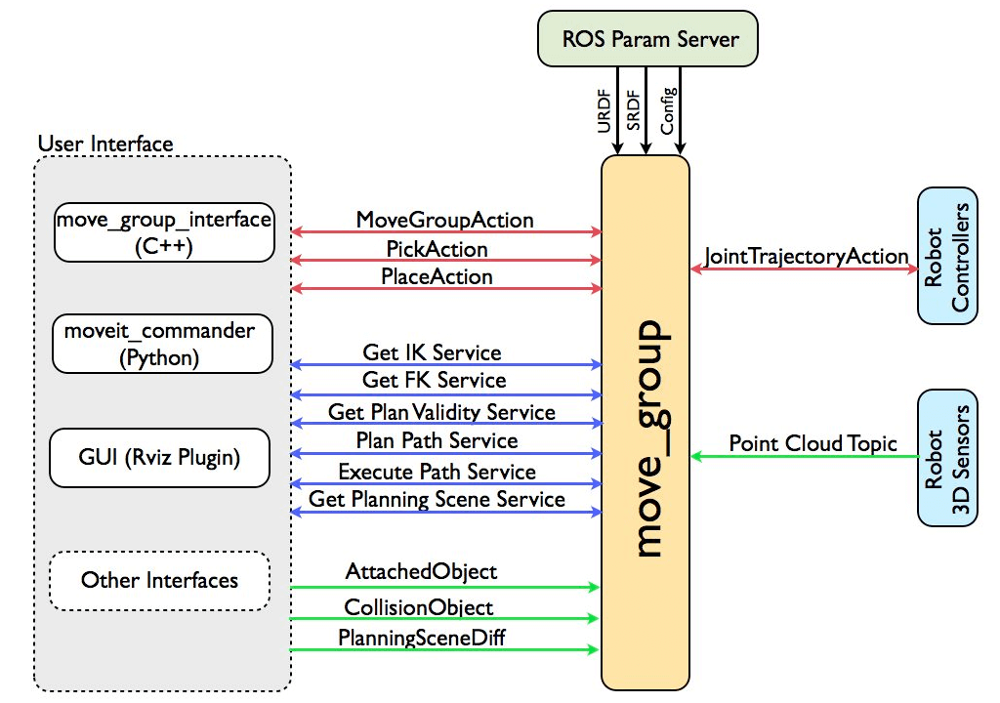

ROS
ROS is an open-source, post-operating system (ROS), or secondary operating system, for robotic control. It provides operating system-like functionality, including hardware abstraction, low-level driver management, execution of shared functions, inter-program messaging, and package management. It also provides tools and libraries for acquiring, building, writing, and running multi-machine integrated programs.
The ROS runtime "graph" is a network of loosely coupled peer-to-peer processes based on the ROS communication infrastructure. ROS implements several different communication methods, including a service mechanism for synchronous RPC-style communication, a topic mechanism for asynchronous streaming data, and a parameter server for data storage.
ROS is not a real-time framework, but it can be embedded in real-time programs. Willow Garage's PR2 robot uses a system called pr2_etherCAT to send and receive ROS messages in real time. ROS also integrates seamlessly with the Orocos Real-Time Toolkit.
ROS Logo:
1 Design Goals And Features Of ROS
Many people ask, "What's the difference between ROS and other robotics software platforms?" This question is difficult to answer. ROS isn't a framework that integrates most functions or features. In fact, its primary goal is to support code reuse in robotics development. ROS is a framework for distributed processes (i.e., nodes), which are encapsulated in programs and function packages and can be easily shared and distributed. ROS also supports a federated system similar to a code repository, which facilitates collaboration and distribution of projects. This design allows for complete independence in project development and implementation, from file systems to user interfaces (ROS has no limitations). Furthermore, all projects can be integrated with ROS's basic tools.
To support its primary goals of sharing and collaboration, the ROS framework also has several other features:
- Streamlined: ROS is designed to be as streamlined as possible, which makes it easier for ROS to The code written can be used with other robotics software frameworks. Consequently, ROS can be easily integrated into other robotics software platforms: ROS has already been integrated with OpenRAVE, Orocos, and Player.
- ROS-independent libraries: The preferred development model for ROS is to write concise library functions that do not depend on ROS.
- Language independence: The ROS framework can be easily implemented in any modern programming language. ROS has been implemented in Python, C++, and Lisp. Experimental libraries are also available in Java and Lua.
- Loose coupling: Functional modules in ROS are encapsulated in independent packages or metapackages, making them easy to share. Modules in a package run on a per-node basis. Using ROS standard IO as an interface, developers do not need to worry about the internal implementation of modules. As long as they understand the interface rules, they can reuse modules and achieve point-to-point loose coupling.
- Convenient testing: ROS has a built-in unit/integration testing framework called rostest, which makes it easy to install and uninstall test modules.
- Extensible: ROS Suitable for large-scale operating systems and development processes.
- Free and open source: It has many developers and feature packages.
2 Why use ROS?
ROS allows us to simulate and control a robotic arm in a virtual environment.
We will use rviz to visualize the robotic arm, manipulate it in various ways, and MoveIt to plan and execute its motion paths, achieving free control of the robotic arm.
In the following chapters, we will learn how to control our product using the ROS platform.
MoveIt
MoveIt is currently the most advanced robotic arm motion manipulation software, used in over 100 robots. It integrates the latest advances in motion planning, control, 3D perception, motion control, control, and navigation, providing an easy-to-use platform for developing advanced robotic applications and an integrated software platform for the design, integration, and evaluation of new robotics products in industry, commerce, R&D, and other fields.
MoveIt Logo :
1 Description
MoveIt is a ROS integrated development platform consisting of various functional packages for manipulating robotic arms, including motion planning, manipulation, control, inverse kinematics, 3D perception, collision detection, and more.
The following figure shows the high-level structure of the main node move_group provided by MoveIt. It acts as a combiner: it brings together all the individual components to provide users with a range of operations and services.

2 User Interface
Users can access the operations and services provided by move_group in three ways:
- In C++, using the move_group_interface package makes it easy to use move_group.
- In Python, using the moveit_commander package.
- Through a graphical user interface: using Rviz (a ROS visualization tool) with Motion-commander.
move_group can be configured through the ROS parameter server and can also retrieve the robot's URDF and SRDF from the server.
3 Configuration
move_group is a ROS node. It uses the ROS parameter server to obtain three types of information:
- URDF - move_group looks for the robot_description parameter in the ROS parameter server to obtain the robot's URDF.
- SRDF - move_group looks for the robot_description_semantic parameter in the ROS parameter server to obtain the robot's SRDF. The SRDF is typically created by the user using the MoveIt Setup Assistant.
- MoveIt configuration - move_group will look for additional MoveIt-specific configuration in the ROS parameter server, including information about joint constraints, kinematics, motion planning, perception, and more. Configuration files for these components are automatically generated by the MoveIt Setup Assistant and stored in the configuration directory of the robot's corresponding MoveIt configuration package. For more information on using the setup assistant, see: MoveIt Setup Assistant